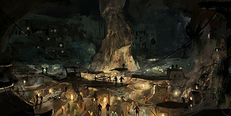

		<!DOCTYPE html>
<html = style="height: 100%;">
  <head>
    <title>Зов из Глубин</title>
	<meta name="viewport" content="width=device-width, initial-scale=1">
    <link rel="stylesheet" href="scripts/leaflet.css">
    <script src="scripts/leaflet.js"></script>
	
<style>
@font-face {
            font-family: 'Mookmania';
            src: url('data/Mookmania.otf');
        }
/* css to customize Leaflet default styles  */
.custom .leaflet-popup-tip,
.custom .leaflet-popup-content-wrapper {
    background: #ead8c1;
    color: #000000;
	font-size:12px;
	font-family: 'Mookmania';
}
.custom .leaflet-container {
    background: #ead8c1;
    outline: 0;
}
</style>
  </head>
  <body style="height: 100%;margin: 0;">
    <div id="map" style="width: 100vw; height: 100%; background: #1b243a;"></div>
    <script type="text/javascript">
  //Creating the Map
     var map = L.map('map',{maxZoom: 4, minZoom: 1.5, zoomSnap: 0.25,zoomDelta: 0.25}).setView([0, 0], 0);
    L.tileLayer('data/map/{z}/{x}/{y}.png', {
      continuousWorld: false,
      noWrap: true,  
      minZoom: 1.5,
      maxZoom: 4,
    }).addTo(map);
  //Coordinate Finder
    var marker = L.marker([0, 0], {
      draggable: true,
    }); //HERE.addTo(map) before;!!!
    marker.bindPopup('LatLng Marker').openPopup();
    marker.on('dragend', function(e) {
      marker.getPopup().setContent(marker.getLatLng().toString()).openOn(map);
    });
		  var customOptions =
        {
        'maxWidth': '370',
        'className' : 'custom',
		'autoPan': true
        }
		var capitalIcon = L.icon({
    iconUrl: 'icons/cityCapital.png',
	iconSize:    [25, 41],
	iconAnchor:   [15, 45],
	popupAnchor:  [-2, -29]
});
        var ritland = L.marker([9.18, 13.8], {icon: capitalIcon,title:'Ритланд'})
            .bindPopup("<h3> Ритланд </h2> <b> Столица </b> - Сталесвет. <br> <b>Известные организации</b> - 'Верные Солнцу', 'Острая Луна'.  <br> Самодержавие людей. Известно искусством 'ковки душ', позволяющей создавать разумных автоматонов. Военный и религиозный центр борьбы Светлых рас с дроу, дуэргарами и их союзниками.",customOptions);
		var whitetwrs = L.marker([37.5, -1.75], {icon: capitalIcon,title:'Белые Башни'})
            .bindPopup("<h3> Белые Башни </h2> <b> Две столицы  </b> - Хрона и Нумен. <br> <b>Известные организации</b> - 'Академия', 'Ткацкий дом Пирнé'.  <br> Меритократия эльфов, которой управляет совет мудрейших и сильнейших. Страна балансирует между мнениями двух противоположностей - воинственных мореплавателей из Нумена и эпатажных любителей моды из Хроны.",customOptions);
		var cadur = L.marker([61.2, -3.5], {icon: capitalIcon,title:"Кадур-Нарг'арк"})
            .bindPopup("<h3> Кадур-Нарг'арк </h2> <b> Столица </b> - Торндин. <br> <b>Известные организации</b> - 'Клан Дунлур', 'Слышащие Камень'.  <br> Иерархия щитовых и горных дварфов, система кланов, которой управляет старейшина сильнейшего из кланов. Главный поставщик металла для Ритланда и драгоценных камней для Белых Башен.",customOptions);
		var horter = L.marker([33.3, 48.4], {icon: capitalIcon,title:"Хортер"})
            .bindPopup("<h3> Хортер </h2> <b> Столица </b> - Гиббльдин. <br> <b>Известные организации</b> - 'Камнеходы', 'Лазуритовый Караван'.  <br> Плутократия гномов. Транзитное государство, обладающее знаниями тайных проходов через туннели и перевалы Гор Скорби. Ценность отдельной личности в этой стране определяется её возможностью заработать золото. Те, кто не смог выплатить взятый займ при жизни, воскрешаются в качестве нежити, бездумно выполняющей приказы заимодателя.",customOptions);
		var triran = L.marker([15.96, 64.9], {icon: capitalIcon,title:"Триран"})
            .bindPopup("<h3> Триран </h2> <b> Столица </b> - Малджан. <br> <b>Известные организации</b> - 'Избранники Белтирда', 'Восточная Торговая Ассоциация'.  <br> Иерархия золотых и холмовых дварфов, исключительно наземные кланы с самым богатым кланом во главе государства. Триран имеет развитую сеть торговых путей от Сафур-Шахата и Райхо-дзи к Ритланду и другим странам, транспортируя ценные металлы и редкие ингредиенты. В глубинах столицы постоянно ведутся алхимические эксперименты, давая жизнь существам удивительной силы и ярости - Львам Малджана.",customOptions);
		var safur = L.marker([-1.05, 101.9], {icon: capitalIcon,title:"Сафур-Шахат"})
            .bindPopup("<h3> Сафур-Шахат </h2> <b> Столица </b> - Милость Всетворца. <br> <b>Известные организации</b> - 'Хранители', 'Углеходцы'.  <br> Теократия золотых дварфов. Наследники-изоляционисты сгоревшего в Бледном пожаре государства дварфов. После падения бывшей столицы организовали орден Хранителей, следящий за активностью Бледных пустошей и сдерживающий наплывы монстров. Сотни свитков со знаниями из старого мира хранятся в хранилищах Сафур-Шахата, скрытые от глаз чужаков.",customOptions);
		var raiho = L.marker([-56.2, 71.3], {icon: capitalIcon,title:"Райхо-дзи"})
            .bindPopup("<h3> Райхо-дзи </h2> <b> Столица </b> - Накинодза. <br> <b>Известные организации</b> - 'Храм Азаши', 'Дельфины'.  <br> Матриархат людей. Главные поставщики свитков и магических компонентов для нужд Светлых рас. Власть сосредоточена в руках жриц Азаши, при этом жреческой магии обучают исключительно женщин.",customOptions);

	//Marker Groups
  var cities = L.layerGroup([ritland,whitetwrs,cadur,horter,triran,safur,raiho]);
  cities.addTo(map);
//Marker Overlay
  var overlays={
    "Столицы и государства" : cities
    }
//GROUP CONTROLS
  L.control.layers(null, overlays).addTo(map);
</script>
  </body>
</html>